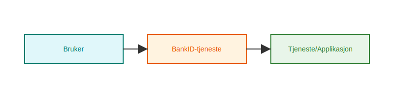
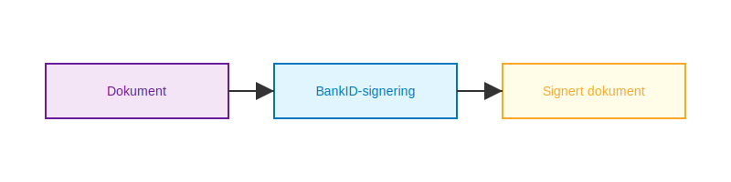
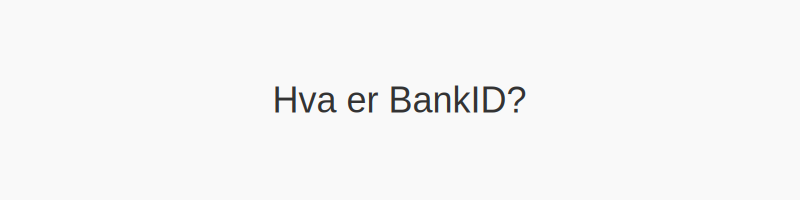

BankID er den mest brukte digitale identitets- og signaturløsningen i Norge, og spiller en sentral rolle innen regnskap, banktjenester og offentlige systemer. Med BankID kan brukere autentisere seg sikkert og signere dokumenter elektronisk, noe som forenkler arbeidsflyter og ivaretar strenge sikkerhetskrav.
Les mer om Bedriftsbank for en komplett oversikt over bedriftens banktjenester og bruk av BankID.
Historikk og utvikling
BankID ble introdusert i 2003 gjennom et samarbeid mellom flere norske banker. Målet var å etablere en felles, pålitelig infrastruktur for elektronisk identifikasjon (eID). Siden lanseringen har løsningen gjennomgått flere oppgraderinger for å møte nye krav innen personvern og IT-sikkerhet, samt for å støtte avansert funksjonalitet som mobil signering.
Typer BankID
| Type BankID | Beskrivelse |
|---|---|
| BankID på mobil | Autentisering via mobilnummer og engangskoder i app. |
| BankID med programvare | Programvarebasert løsning for PC og mobil. |
| BankID med kodebrikke | Fysisk enhet som genererer engangskoder offline. |
Bruksområder i regnskapssystemer
BankID integreres i moderne regnskapssystemer for å sikre at autoriserte brukere har riktig tilgang og for å muliggjøre digitale signaturer på regnskapsbilag.
- Innlogging og brukeradministrasjon: Beskytter sensitive data i regnskapssystemet.
- Elektronisk signering: Digital godkjenning av årsregnskap, kontrakter og bilag.
- Automatisert rapportering til Altinn og eFaktura.
- API-integrasjon via Open Banking og API-integrasjon og automatisering.
Autentiseringsflyt

Signeringsflyt

Sikkerhet og personvern
BankID er underlagt både norske og europeiske regelverk, blant annet eIDAS og GDPR, noe som sikrer at alle transaksjoner og personopplysninger håndteres sikkert og i henhold til lov.
| Regelverk | Fokusområde |
|---|---|
| eIDAS | EU-rammeverk for elektronisk identitet |
| GDPR | Personvern og databeskyttelse |
For mer om sikkerhet, se Hva er tofaktorautentisering?.
Fordeler og utfordringer
Fordeler:
- Økt sikkerhet og brukertillit.
- Raskere og mer effektive arbeidsprosesser.
- Reduserte kostnader knyttet til papirdokumenter.
Utfordringer:
- Avhengighet av ekstern infrastruktur.
- Behov for brukeropplæring.
- Håndtering av tekniske feil og support.
Veien videre
BankID forventes å utvikle seg med nye funksjoner som biometrisk autentisering og utvidet støtte for digitale signaturer i flere juridiske dokumenter. Regnskapsførere og økonomimedarbeidere må derfor følge med på utviklingen for å utnytte potensialet fullt ut.
